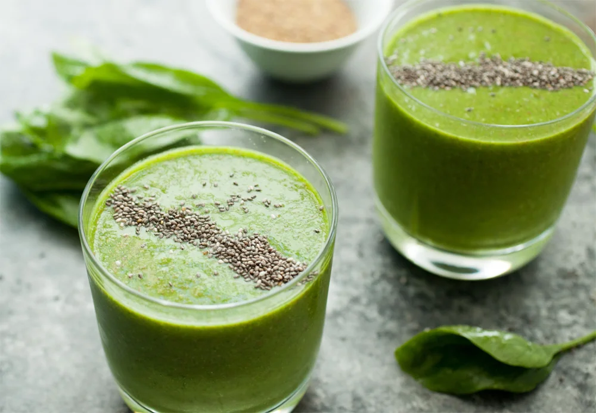
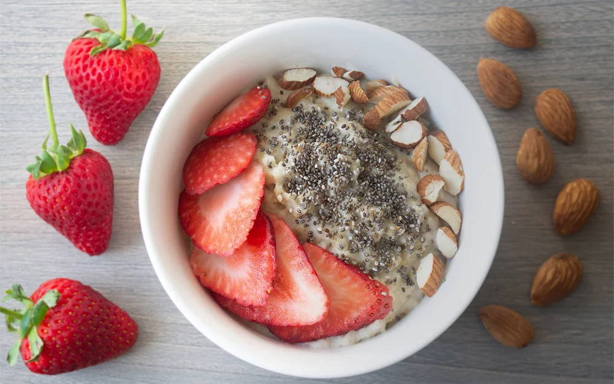
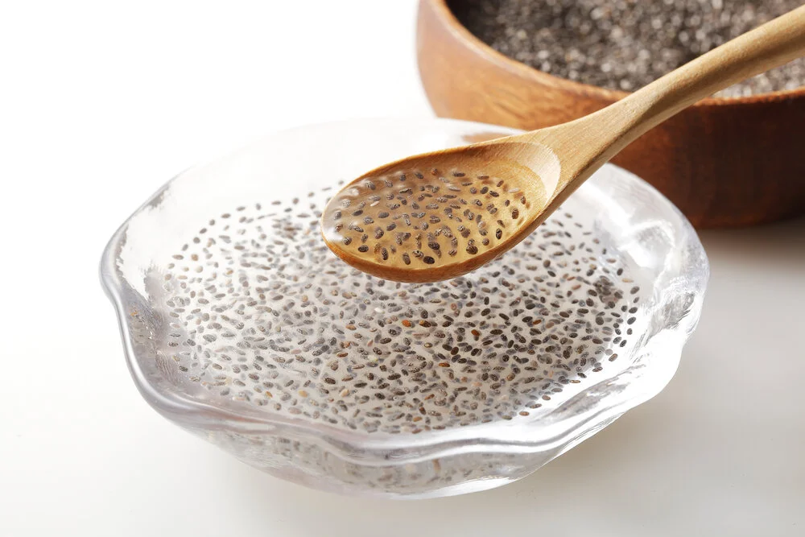

Семена чиа, произрастающие из растения Salvia hispanica, стали настоящим феноменом в мире здорового питания и фитнеса. Эти маленькие, но мощные семена являются настоящим сокровищем питательных веществ и могут приносить множество выгод для здоровья. В этой статье мы рассмотрим, что такое семена чиа, и какие полезные свойства и преимущества они могут предложить.
Семена чиа получили свое имя от древних майя, которые использовали их как источник энергии. Эти маленькие семена, имеющие размер семян горчицы, обладают обширным питательным профилем.
Семена чиа являются продуктом растения Salvia hispanica, которое произрастает в регионах Центральной и Южной Америки. Семена чиа были важной частью древней месоамериканской диеты и часто использовались в качестве источника пищи и энергии. Считается, что чиа была одной из основных культурных культур майя и ацтеков.
Одной из выдающихся особенностей семян чиа является их богатый питательный состав. Они богаты белком, волокнами, антиоксидантами, витаминами и минералами. Наиболее значимые питательные вещества, которые содержатся в семенах чиа, включают в себя:
Этот богатый состав делает семена чиа ценным источником питательных веществ и приносит им статус суперфуда.
Семена чиа могут быть добавлены в разнообразные блюда и напитки, что делает их универсальным продуктом для включения в рацион питания. Вот несколько способов и рецептов, как использовать семена чиа:
Чиа-пудинг

Для приготовления чиа-пудинга, смешайте 3-4 столовые ложки семян чиа с 1 чашкой растительного молока (например, миндального или кокосового). Добавьте немного натурального сладителя (например, мед или кленовый сироп) и ванильный экстракт для вкуса. Перемешайте и оставьте смесь в холодильнике на несколько часов или на ночь, чтобы образовался пудинг с гель-подобной текстурой. Перед подачей можно украсить фруктами и орехами.
Чиа-смузи
Добавьте 1-2 столовые ложки семян чиа в ваш любимый смузи. Семена чиа придадут смузи текстуру и увеличат его питательную ценность. Вы можете использовать их вместе с фруктами, орехами, медом и молоком по вашему выбору.
Завтрак с чиа
Посыпьте семена чиа сверху вашего овсянки, йогурта или мюсли. Они добавят хрустящую текстуру и богатство питательных веществ к вашему утреннему завтраку.
Чиа-гель для запекания
Семена чиа можно использовать для замены яиц в рецептах запеканок или выпечки. Чтобы сделать чиа-гель, смешайте 1 столовую ложку семян чиа с 2,5 столовыми ложками воды и дайте стоять около 15 минут, пока смесь не превратится в густой гель. Этот гель можно использовать как замену яиц в рецептах.
Это всего лишь несколько способов использования семян чиа в приготовлении еды. Они могут быть также добавлены в салаты, йогурты, каши, коктейли и даже выпечку для улучшения их питательной ценности.
Семена чиа могут быть ценным дополнением к здоровому образу жизни. Они могут помочь улучшить пищеварение, обеспечить организм важными питательными веществами и помочь контролировать вес. Однако следует помнить, что как и с любым продуктом, употребление семян чиа следует умеренно и в сочетании с разнообразным питанием.
Семена чиа - это не только вкусный и питательный продукт, но и удивительный источник здоровья. Включение их в ваш рацион питания может помочь вам чувствовать себя бодрее и здоровее.